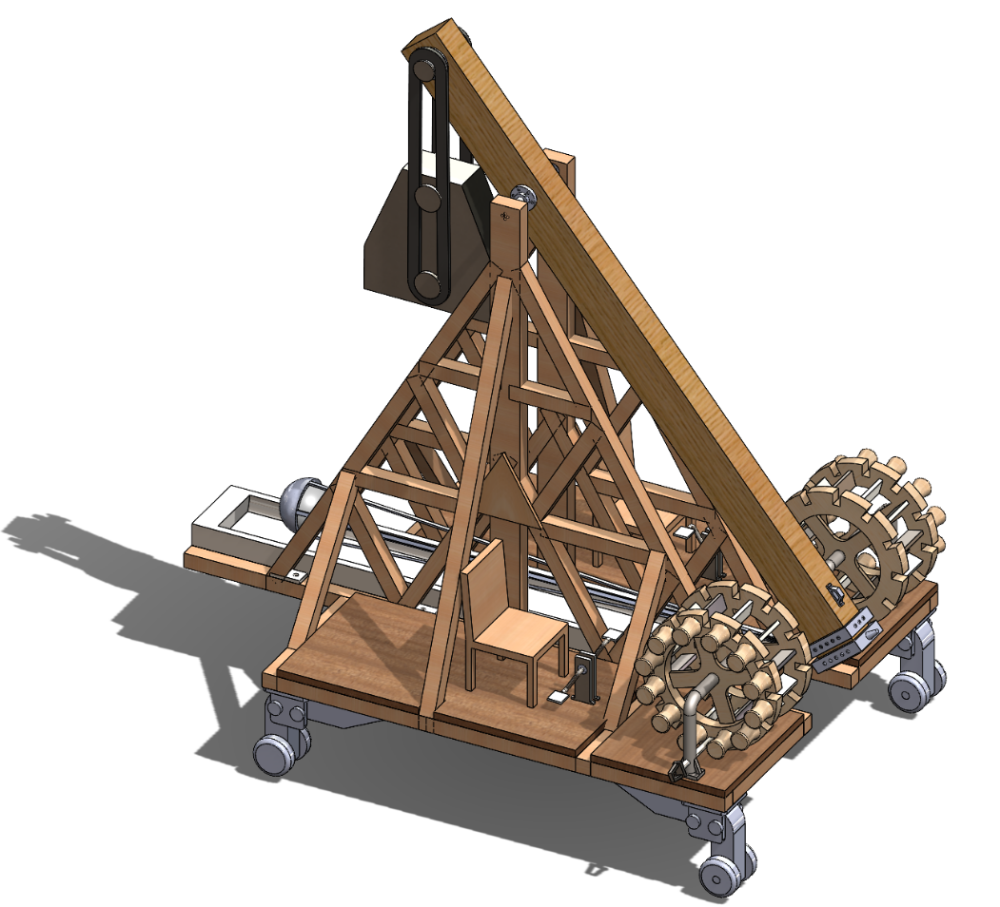
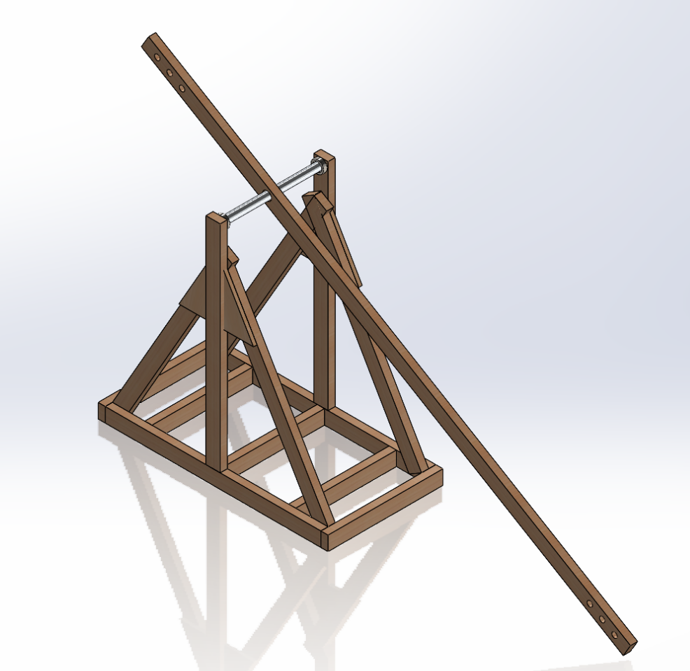
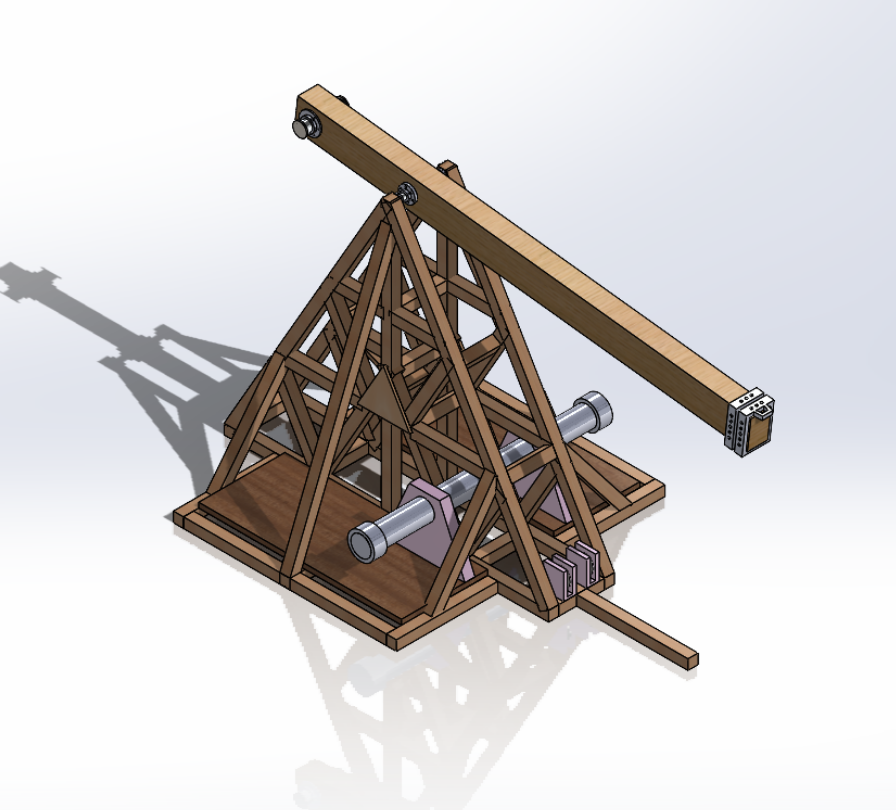
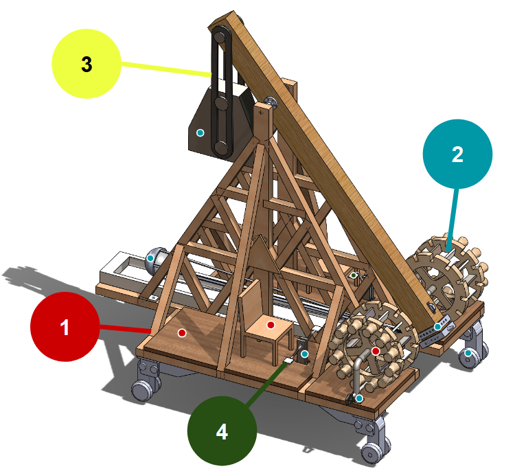
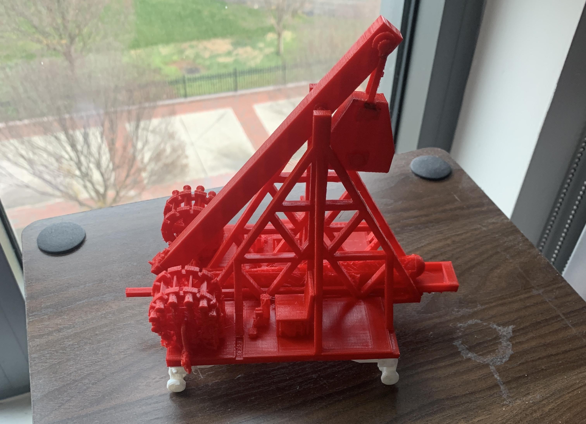
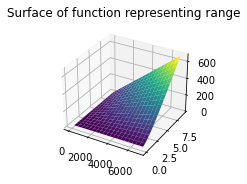
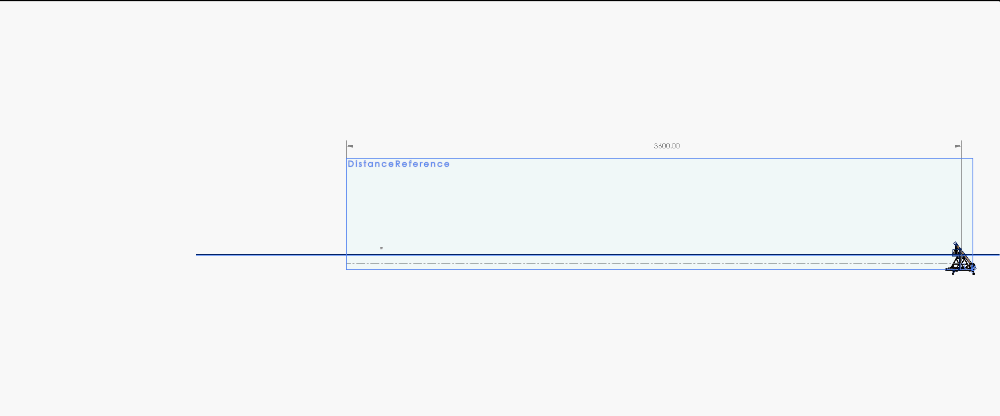
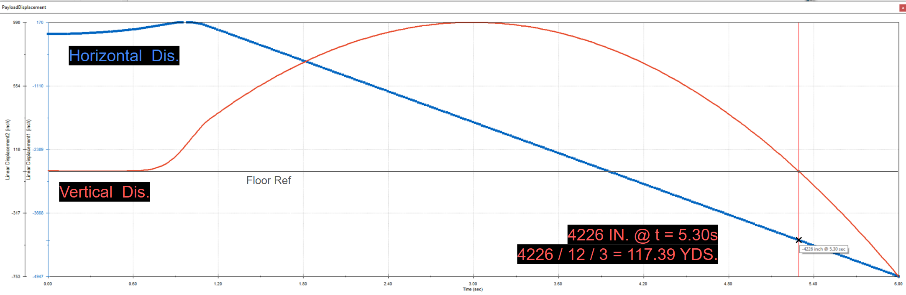
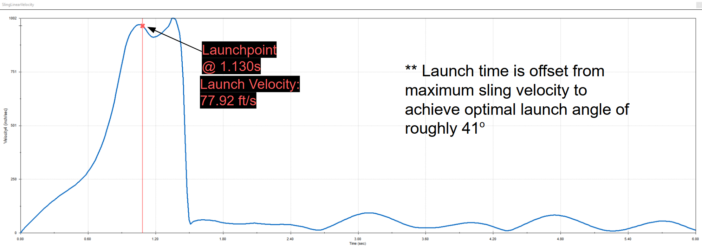

Background
During my first semester at VCU, I enrolled in an engineering visualization and computer-aided design course. This class taught me the fundamentals of SolidWorks and reinforced my previous background in 3D design, culminating in a semester-long project to develop a trebuchet. We worked in teams of five and repeatedly improved, iterated, and discarded designs over the semester.

Objective
The objective of this project was to design and evaluate a trebuchet, capable of launching a 50-lbs projectile at least 100-yards. Both calculations and simulation data were required to be used to verify the design parameters were met. Safety and operating procedures also had to be considered and implemented into the design.
Constraints
The trebuchet assembly was required to fit within a 15-foot by 9-foot footprint. Additionally, the assembly had to be designed to be mobile and operable by two users, with a reset mechanism for reloading after firing. Our material selection also influenced the final cost of the assembly, which ought to be minimized to a reasonable degree through the design.
Design: Version 1
During the early semester, We conducted research into historic trebuchet designs, and I designed a basic trebuchet in SolidWorks to be used to determine how our design would need to change to meet the criteria laid out in the project objective. This basic design, consisting of only a base, axle, and launch arm, fell well short of the required 100-yard launch distance.
Following this early design, our team met and noted the major flaws in our design, namely the low power and lack of structural support, and created a plan to advance our design closer to our goal. We also planned to design a reset mechanism, for this new design, as well as take into account the safety and operation conditions the users would be under.
Design: Version 2
With a new direction established, I quickly got to work modeling the new design for the trebuchet. I began by building out a reinforced base assembly, providing structural support and stability for the later operations, as well as ensuring the trebuchet would fit within its footprint. A crank assembly, pictured as the pink-and-metal assembly to the right, was designed to reset the launch arm using a belt which could be cranked down by the users. This design did not have any accessible cranks to the users at this time, however it was an important step to developing the user interaction for our trebuchet.
This design also included a reinforced launch arm, which could withstand the force of both the counterweight and payload. It also included a more secure attachment point for these elements, using thick steel fasteners rather than only wood. This design highlighted the importance of maintaining effective clearance for the trebuchet, as some of the support beams restrict its motion, as well as the importance of material selection throughout the design process.
Final Design
Our final design implemented a number of unique elements that were inspired by our previous designs. First, a payload sled was added to the bottom of the frame to provide a consistent launch point that would prevent interference with other structural components. This also allows the payload to move smoothly when firing the trebuchet, protecting it from potential damage from the reaction forces.
Second, the reset assembly was revamped, using two large winding wheels instead of the previous single-axle design. This provided significantly better clearance for the launch arm and also increased the mechanical advantage for the operators when resetting the mechanism. This mechanism can be powered either by hand, using the knobs on the side of the wheels, or using leg power through the integrated pedal system. We also included large steel wheels which could support the trebuchet's weight to ensure it could be moved and set up in position.
Design Analysis
Material Selection
Our material selection was done to minimize costs where possible while ensuring the trebuchet had redundant structural support,
ensuring a safe launch and preventing damage to the assembly or operators.
Material 1 indicates where oak wood was used. Wood has the clear benefits
of being extremely lightweight, yet sturdy and capable of providing structural support. It is also inexpensive compared to metals,
effectively minimizing cost as this is the dominant material in our design.
Material 2 indicates where steel was used, notable for its extremely high toughness and density. Steel
was used for structural components which will be focal points for the forces acting on the trebuchet, including the launch arm axle, wheels, and winding
wheel. Steel was also used as the counterweight to minimize the size of the counterweight and maximize the drop distance.
Material 3 indicates where reinforced nylon was used, particularly for belts and hanging components. Thick
nylon is incredibly strong, ensuring it will be able to support the counterweight as well as reset the launch arm after firing.
Material 4 indicates where ABS plastic was used, intended for less structurally-important components.
ABS is a relatively tough plastic and is extremely lightweight, used for the pedals on the leg-crank assembly for the arm reset. These components also
have the benefit of being able to be 3D-printed instead of machined, cutting down on the time needed to construct this trebuchet.
Bill of Materials
Using SolidWorks, we implemented our above material selections to determine what the total material cost for the assembly would be. In total, we determined that the final cost for this trebuchet was $2,932.54. Two steel components, the wheels and counterweight, made up 82% of the total material cost. These components were especially expensive because they use steel and are required to provide significant structural support, thus reducing the cost of these few components any further is not feasible with this current design. Given the scale and power of the trebuchet, this cost represents a reasonable value for its ability.

Prototype
We printed a prototype of our assembly to ensure the real-world operability of our design, which was ultimately a success. We created several prints in different orientations on the print-bed using a Prusa MK4 FDM printer, and ultimately selected the result with the best layer quality.
Project Criteria Validation
Mathematical Analysis
We used the basic equations of kinematics and particle motion to predict the required launch velocity for our trebuchet, then compared this to the acceleration expected from the force of gravity on the counterweight. Using these formulas, we were able to create a two-variable function using matplotlib in Python, representing the trebuchet range, varying based on the counterweight mass and launch arm length. This analysis allowed us to determine that a weight of 3085 lbs for the counterweight and a launch arm length of 9.7 ft would theoretically exceed a 100-yard range. To confirm this analysis, we also conducted a simulation of the trebuchet operation in SolidWorks, providing definitive proof that our design is able to meet the parameters laid out in the project constraints.
SolidWorks Simulation

The launch simulation was set up to export the horizontal and vertical displacement of the payload, as well as the velocity of the sling. All the relevant results from the simulation are included below, and this proved the assembly capable of launching the payload 117.39 yards, exceeding the 100-yard minimum set out in the project objective. The simulation was implemented using the SolidWorks simulation physics engine
Simulation Results
Payload Vertical/Horizontal Displacement

Sling Velocity

Payload Weight: 50 lbs
Flight Duration: 5.30s
Launch Distance: 352.17 ft (117.39 yds)
Max Height: 82.5 ft (27.5 yds)
Launch Velocity (Magnitude): 77.92 ft/s (26.0 yds/s)
Conclusions
This project was an invaluable experience not only for the complex design work it demanded, but also because it drove us to work in tandem with our team and develop the project as a group effort. I contributed the vast majority of the work done for this project, including nearly all the SolidWorks designs, the simulation, and significant behind-the-scenes planning. The team environment struggled significantly, as our project members would regularly miss meetings or show up late, fail to complete work by agreed upon deadlines, and fail to communicate when there were obstacles preventing them from moving forward.
Despite these challenges, I tremendously enjoyed having the opportunity to apply my skills to this project, and I felt that I was able to ascertain a more hollistic understanding of the design process. This experience undoubtedly shaped the way I have approached planning my projects going forward, and I hope to use the skills and lessons I learned from this project and apply them to a more ambitious goal in the future.
If you want to learn more about this project, you can take a look at the Final Presentation we submitted alongside our project, which details all the information above and more.